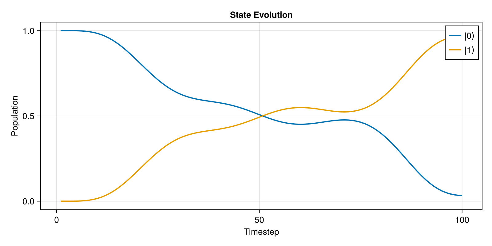

State Transfer
This tutorial covers state-to-state transfer using KetTrajectory. We'll prepare quantum states and implement gates via state mappings.
Overview
While UnitaryTrajectory optimizes for a full unitary gate, KetTrajectory optimizes for transferring a specific initial state to a target state. This is useful for:
- State preparation
- Gates where you only care about specific state mappings
- Problems where full unitary tracking is expensive
using Piccolo
using CairoMakie
using Random
Random.seed!(123)Random.TaskLocalRNG()Single State Transfer
Let's prepare the |1⟩ state starting from |0⟩.
Setup
# Create quantum system
H_drift = 0.5 * PAULIS[:Z]
H_drives = [PAULIS[:X], PAULIS[:Y]]
sys = QuantumSystem(H_drift, H_drives, [1.0, 1.0])
# Time parameters
T, N = 10.0, 100
times = collect(range(0, T, length = N))
# Initial pulse
pulse = ZeroOrderPulse(0.1 * randn(2, N), times)ZeroOrderPulse{DataInterpolations.ConstantInterpolation{Matrix{Float64}, Vector{Float64}, Vector{Union{}}, Float64}}(DataInterpolations.ConstantInterpolation{Matrix{Float64}, Vector{Float64}, Vector{Union{}}, Float64}([0.08082879284649669 -0.1104636102329296 … -0.0903138108555931 -0.005439189822271359; -0.11220725081141734 -0.04169926351649334 … -0.25366861548131786 -0.12173272493662057], [0.0, 0.10101010101010101, 0.20202020202020202, 0.30303030303030304, 0.40404040404040403, 0.5050505050505051, 0.6060606060606061, 0.7070707070707071, 0.8080808080808081, 0.9090909090909091 … 9.090909090909092, 9.191919191919192, 9.292929292929292, 9.393939393939394, 9.494949494949495, 9.595959595959595, 9.696969696969697, 9.797979797979798, 9.8989898989899, 10.0], Union{}[], nothing, :left, DataInterpolations.ExtrapolationType.None, DataInterpolations.ExtrapolationType.None, FindFirstFunctions.Guesser{Vector{Float64}}([0.0, 0.10101010101010101, 0.20202020202020202, 0.30303030303030304, 0.40404040404040403, 0.5050505050505051, 0.6060606060606061, 0.7070707070707071, 0.8080808080808081, 0.9090909090909091 … 9.090909090909092, 9.191919191919192, 9.292929292929292, 9.393939393939394, 9.494949494949495, 9.595959595959595, 9.696969696969697, 9.797979797979798, 9.8989898989899, 10.0], Base.RefValue{Int64}(1), true), false, true), 10.0, 2, :u, [0.0, 0.0], [0.0, 0.0])Define State Transfer
# Initial state: |0⟩
ψ_init = ComplexF64[1.0, 0.0]
# Target state: |1⟩
ψ_goal = ComplexF64[0.0, 1.0]
# Create KetTrajectory
qtraj = KetTrajectory(sys, pulse, ψ_init, ψ_goal)KetTrajectory{ZeroOrderPulse{DataInterpolations.ConstantInterpolation{Matrix{Float64}, Vector{Float64}, Vector{Union{}}, Float64}}, SciMLBase.ODESolution{ComplexF64, 2, Vector{Vector{ComplexF64}}, Nothing, Nothing, Vector{Float64}, Vector{Vector{Vector{ComplexF64}}}, Nothing, SciMLBase.ODEProblem{Vector{ComplexF64}, Tuple{Float64, Float64}, true, SciMLBase.NullParameters, SciMLBase.ODEFunction{true, SciMLBase.FullSpecialize, SciMLOperators.MatrixOperator{ComplexF64, Matrix{ComplexF64}, SciMLOperators.FilterKwargs{Nothing, Val{()}}, SciMLOperators.FilterKwargs{Piccolo.Quantum.Rollouts.var"#update!#_construct_operator##2"{QuantumSystem{Piccolo.Quantum.QuantumSystems.var"#37#38"{SparseArrays.SparseMatrixCSC{ComplexF64, Int64}, Vector{SparseArrays.SparseMatrixCSC{ComplexF64, Int64}}, Int64}, Piccolo.Quantum.QuantumSystems.var"#39#40"{Vector{SparseArrays.SparseMatrixCSC{Float64, Int64}}, Int64, SparseArrays.SparseMatrixCSC{Float64, Int64}}, @NamedTuple{}, Vector{DriftTerm{SparseArrays.SparseMatrixCSC{ComplexF64, Int64}, Returns{Float64}, Returns{Float64}}}, SparseArrays.SparseMatrixCSC{ComplexF64, Int64}}}, Val{()}}}, LinearAlgebra.UniformScaling{Bool}, Nothing, Nothing, Nothing, Nothing, Nothing, Nothing, Nothing, Nothing, Nothing, Nothing, Nothing, Nothing, typeof(SciMLBase.DEFAULT_OBSERVED), Nothing, Piccolo.Quantum.Rollouts.PiccoloRolloutSystem{Union{Int64, AbstractVector{Int64}, CartesianIndex, CartesianIndices}}, Nothing, Nothing}, Base.Pairs{Symbol, Vector{Float64}, Nothing, @NamedTuple{tstops::Vector{Float64}}}, SciMLBase.StandardODEProblem}, OrdinaryDiffEqLinear.MagnusAdapt4, OrdinaryDiffEqCore.InterpolationData{SciMLBase.ODEFunction{true, SciMLBase.FullSpecialize, SciMLOperators.MatrixOperator{ComplexF64, Matrix{ComplexF64}, SciMLOperators.FilterKwargs{Nothing, Val{()}}, SciMLOperators.FilterKwargs{Piccolo.Quantum.Rollouts.var"#update!#_construct_operator##2"{QuantumSystem{Piccolo.Quantum.QuantumSystems.var"#37#38"{SparseArrays.SparseMatrixCSC{ComplexF64, Int64}, Vector{SparseArrays.SparseMatrixCSC{ComplexF64, Int64}}, Int64}, Piccolo.Quantum.QuantumSystems.var"#39#40"{Vector{SparseArrays.SparseMatrixCSC{Float64, Int64}}, Int64, SparseArrays.SparseMatrixCSC{Float64, Int64}}, @NamedTuple{}, Vector{DriftTerm{SparseArrays.SparseMatrixCSC{ComplexF64, Int64}, Returns{Float64}, Returns{Float64}}}, SparseArrays.SparseMatrixCSC{ComplexF64, Int64}}}, Val{()}}}, LinearAlgebra.UniformScaling{Bool}, Nothing, Nothing, Nothing, Nothing, Nothing, Nothing, Nothing, Nothing, Nothing, Nothing, Nothing, Nothing, typeof(SciMLBase.DEFAULT_OBSERVED), Nothing, Piccolo.Quantum.Rollouts.PiccoloRolloutSystem{Union{Int64, AbstractVector{Int64}, CartesianIndex, CartesianIndices}}, Nothing, Nothing}, Vector{Vector{ComplexF64}}, Vector{Float64}, Vector{Vector{Vector{ComplexF64}}}, Nothing, OrdinaryDiffEqLinear.MagnusAdapt4Cache{Vector{ComplexF64}, Vector{ComplexF64}, Matrix{ComplexF64}, Vector{ComplexF64}, Nothing}, Nothing}, SciMLBase.DEStats, Nothing, Nothing, Nothing, Nothing}}(QuantumSystem: levels = 2, n_drives = 2, ZeroOrderPulse{DataInterpolations.ConstantInterpolation{Matrix{Float64}, Vector{Float64}, Vector{Union{}}, Float64}}(DataInterpolations.ConstantInterpolation{Matrix{Float64}, Vector{Float64}, Vector{Union{}}, Float64}([0.08082879284649669 -0.1104636102329296 … -0.0903138108555931 -0.005439189822271359; -0.11220725081141734 -0.04169926351649334 … -0.25366861548131786 -0.12173272493662057], [0.0, 0.10101010101010101, 0.20202020202020202, 0.30303030303030304, 0.40404040404040403, 0.5050505050505051, 0.6060606060606061, 0.7070707070707071, 0.8080808080808081, 0.9090909090909091 … 9.090909090909092, 9.191919191919192, 9.292929292929292, 9.393939393939394, 9.494949494949495, 9.595959595959595, 9.696969696969697, 9.797979797979798, 9.8989898989899, 10.0], Union{}[], nothing, :left, DataInterpolations.ExtrapolationType.None, DataInterpolations.ExtrapolationType.None, FindFirstFunctions.Guesser{Vector{Float64}}([0.0, 0.10101010101010101, 0.20202020202020202, 0.30303030303030304, 0.40404040404040403, 0.5050505050505051, 0.6060606060606061, 0.7070707070707071, 0.8080808080808081, 0.9090909090909091 … 9.090909090909092, 9.191919191919192, 9.292929292929292, 9.393939393939394, 9.494949494949495, 9.595959595959595, 9.696969696969697, 9.797979797979798, 9.8989898989899, 10.0], Base.RefValue{Int64}(100), true), false, true), 10.0, 2, :u, [0.0, 0.0], [0.0, 0.0]), ComplexF64[1.0 + 0.0im, 0.0 + 0.0im], ComplexF64[0.0 + 0.0im, 1.0 + 0.0im], SciMLBase.ODESolution{ComplexF64, 2, Vector{Vector{ComplexF64}}, Nothing, Nothing, Vector{Float64}, Vector{Vector{Vector{ComplexF64}}}, Nothing, SciMLBase.ODEProblem{Vector{ComplexF64}, Tuple{Float64, Float64}, true, SciMLBase.NullParameters, SciMLBase.ODEFunction{true, SciMLBase.FullSpecialize, SciMLOperators.MatrixOperator{ComplexF64, Matrix{ComplexF64}, SciMLOperators.FilterKwargs{Nothing, Val{()}}, SciMLOperators.FilterKwargs{Piccolo.Quantum.Rollouts.var"#update!#_construct_operator##2"{QuantumSystem{Piccolo.Quantum.QuantumSystems.var"#37#38"{SparseArrays.SparseMatrixCSC{ComplexF64, Int64}, Vector{SparseArrays.SparseMatrixCSC{ComplexF64, Int64}}, Int64}, Piccolo.Quantum.QuantumSystems.var"#39#40"{Vector{SparseArrays.SparseMatrixCSC{Float64, Int64}}, Int64, SparseArrays.SparseMatrixCSC{Float64, Int64}}, @NamedTuple{}, Vector{DriftTerm{SparseArrays.SparseMatrixCSC{ComplexF64, Int64}, Returns{Float64}, Returns{Float64}}}, SparseArrays.SparseMatrixCSC{ComplexF64, Int64}}}, Val{()}}}, LinearAlgebra.UniformScaling{Bool}, Nothing, Nothing, Nothing, Nothing, Nothing, Nothing, Nothing, Nothing, Nothing, Nothing, Nothing, Nothing, typeof(SciMLBase.DEFAULT_OBSERVED), Nothing, Piccolo.Quantum.Rollouts.PiccoloRolloutSystem{Union{Int64, AbstractVector{Int64}, CartesianIndex, CartesianIndices}}, Nothing, Nothing}, Base.Pairs{Symbol, Vector{Float64}, Nothing, @NamedTuple{tstops::Vector{Float64}}}, SciMLBase.StandardODEProblem}, OrdinaryDiffEqLinear.MagnusAdapt4, OrdinaryDiffEqCore.InterpolationData{SciMLBase.ODEFunction{true, SciMLBase.FullSpecialize, SciMLOperators.MatrixOperator{ComplexF64, Matrix{ComplexF64}, SciMLOperators.FilterKwargs{Nothing, Val{()}}, SciMLOperators.FilterKwargs{Piccolo.Quantum.Rollouts.var"#update!#_construct_operator##2"{QuantumSystem{Piccolo.Quantum.QuantumSystems.var"#37#38"{SparseArrays.SparseMatrixCSC{ComplexF64, Int64}, Vector{SparseArrays.SparseMatrixCSC{ComplexF64, Int64}}, Int64}, Piccolo.Quantum.QuantumSystems.var"#39#40"{Vector{SparseArrays.SparseMatrixCSC{Float64, Int64}}, Int64, SparseArrays.SparseMatrixCSC{Float64, Int64}}, @NamedTuple{}, Vector{DriftTerm{SparseArrays.SparseMatrixCSC{ComplexF64, Int64}, Returns{Float64}, Returns{Float64}}}, SparseArrays.SparseMatrixCSC{ComplexF64, Int64}}}, Val{()}}}, LinearAlgebra.UniformScaling{Bool}, Nothing, Nothing, Nothing, Nothing, Nothing, Nothing, Nothing, Nothing, Nothing, Nothing, Nothing, Nothing, typeof(SciMLBase.DEFAULT_OBSERVED), Nothing, Piccolo.Quantum.Rollouts.PiccoloRolloutSystem{Union{Int64, AbstractVector{Int64}, CartesianIndex, CartesianIndices}}, Nothing, Nothing}, Vector{Vector{ComplexF64}}, Vector{Float64}, Vector{Vector{Vector{ComplexF64}}}, Nothing, OrdinaryDiffEqLinear.MagnusAdapt4Cache{Vector{ComplexF64}, Vector{ComplexF64}, Matrix{ComplexF64}, Vector{ComplexF64}, Nothing}, Nothing}, SciMLBase.DEStats, Nothing, Nothing, Nothing, Nothing}(Vector{ComplexF64}[[1.0 + 0.0im, 0.0 + 0.0im], [0.9986546829501518 - 0.049977576037549286im, -0.011215692818783948 - 0.008079254281018215im], [0.994881190832833 - 0.09997987860199671im, -0.014477533096611055 + 0.002416823785585529im], [0.9886727749497255 - 0.1495452162118181im, -0.012692747521029266 - 0.0011254073652455245im], [0.9797094100231551 - 0.1988223753455625im, -0.02493380495714436 + 0.004176163836630492im], [0.9685071220846786 - 0.24751807559468558im, -0.02685551585372433 + 0.002745540636799659im], [0.954961892115269 - 0.29528937414701995im, -0.027222372134012855 - 0.010531504113163913im], [0.9390880330162922 - 0.34259984844917846im, -0.02375224365976383 - 0.013222745906974588im], [0.9206507754867481 - 0.38960211422525476im, -0.023648042604338466 + 0.007287816397694862im], [0.9001083207060061 - 0.4349904295150663im, -0.024250932923212832 - 0.00047903910892548116im] … [-0.16786414752298212 + 0.9780289794685573im, -0.10885800740946738 + 0.05857369306199937im], [-0.12122947773472338 + 0.9848759307577017im, -0.11892684126033011 + 0.034339789896907134im], [-0.07253032401855766 + 0.988704631812221im, -0.12890548759860007 + 0.024204925073141922im], [-0.023212357616117337 + 0.991926392525919im, -0.12369372202022244 + 0.015591067866212435im], [0.02666395702391812 + 0.9908033514412959im, -0.13208064883170464 + 0.012347241502659567im], [0.0763180138751215 + 0.9886627719096241im, -0.12914493230967533 + 0.006562823848930505im], [0.12391355472081583 + 0.9867576743661297im, -0.10339904970117748 - 0.016228356568049336im], [0.17242995773998696 + 0.9792408972147962im, -0.10294820570096012 - 0.027510758599311822im], [0.21989024288659764 + 0.9686899992340066im, -0.10623435203872292 - 0.04474627262931361im], [0.2656562004673531 + 0.9540494064401241im, -0.11812797096511285 - 0.07254168250166698im]], nothing, nothing, [0.0, 0.1, 0.2, 0.3, 0.4, 0.5, 0.6, 0.7, 0.8, 0.9 … 9.1, 9.2, 9.3, 9.4, 9.5, 9.6, 9.7, 9.8, 9.9, 10.0], Vector{Vector{ComplexF64}}[[[1.0 + 0.0im, 0.0 + 0.0im]]], nothing, SciMLBase.ODEProblem{Vector{ComplexF64}, Tuple{Float64, Float64}, true, SciMLBase.NullParameters, SciMLBase.ODEFunction{true, SciMLBase.FullSpecialize, SciMLOperators.MatrixOperator{ComplexF64, Matrix{ComplexF64}, SciMLOperators.FilterKwargs{Nothing, Val{()}}, SciMLOperators.FilterKwargs{Piccolo.Quantum.Rollouts.var"#update!#_construct_operator##2"{QuantumSystem{Piccolo.Quantum.QuantumSystems.var"#37#38"{SparseArrays.SparseMatrixCSC{ComplexF64, Int64}, Vector{SparseArrays.SparseMatrixCSC{ComplexF64, Int64}}, Int64}, Piccolo.Quantum.QuantumSystems.var"#39#40"{Vector{SparseArrays.SparseMatrixCSC{Float64, Int64}}, Int64, SparseArrays.SparseMatrixCSC{Float64, Int64}}, @NamedTuple{}, Vector{DriftTerm{SparseArrays.SparseMatrixCSC{ComplexF64, Int64}, Returns{Float64}, Returns{Float64}}}, SparseArrays.SparseMatrixCSC{ComplexF64, Int64}}}, Val{()}}}, LinearAlgebra.UniformScaling{Bool}, Nothing, Nothing, Nothing, Nothing, Nothing, Nothing, Nothing, Nothing, Nothing, Nothing, Nothing, Nothing, typeof(SciMLBase.DEFAULT_OBSERVED), Nothing, Piccolo.Quantum.Rollouts.PiccoloRolloutSystem{Union{Int64, AbstractVector{Int64}, CartesianIndex, CartesianIndices}}, Nothing, Nothing}, Base.Pairs{Symbol, Vector{Float64}, Nothing, @NamedTuple{tstops::Vector{Float64}}}, SciMLBase.StandardODEProblem}(SciMLBase.ODEFunction{true, SciMLBase.FullSpecialize, SciMLOperators.MatrixOperator{ComplexF64, Matrix{ComplexF64}, SciMLOperators.FilterKwargs{Nothing, Val{()}}, SciMLOperators.FilterKwargs{Piccolo.Quantum.Rollouts.var"#update!#_construct_operator##2"{QuantumSystem{Piccolo.Quantum.QuantumSystems.var"#37#38"{SparseArrays.SparseMatrixCSC{ComplexF64, Int64}, Vector{SparseArrays.SparseMatrixCSC{ComplexF64, Int64}}, Int64}, Piccolo.Quantum.QuantumSystems.var"#39#40"{Vector{SparseArrays.SparseMatrixCSC{Float64, Int64}}, Int64, SparseArrays.SparseMatrixCSC{Float64, Int64}}, @NamedTuple{}, Vector{DriftTerm{SparseArrays.SparseMatrixCSC{ComplexF64, Int64}, Returns{Float64}, Returns{Float64}}}, SparseArrays.SparseMatrixCSC{ComplexF64, Int64}}}, Val{()}}}, LinearAlgebra.UniformScaling{Bool}, Nothing, Nothing, Nothing, Nothing, Nothing, Nothing, Nothing, Nothing, Nothing, Nothing, Nothing, Nothing, typeof(SciMLBase.DEFAULT_OBSERVED), Nothing, Piccolo.Quantum.Rollouts.PiccoloRolloutSystem{Union{Int64, AbstractVector{Int64}, CartesianIndex, CartesianIndices}}, Nothing, Nothing}(MatrixOperator(2 × 2), LinearAlgebra.UniformScaling{Bool}(true), nothing, nothing, nothing, nothing, nothing, nothing, nothing, nothing, nothing, nothing, nothing, nothing, SciMLBase.DEFAULT_OBSERVED, nothing, Piccolo.Quantum.Rollouts.PiccoloRolloutSystem{Union{Int64, AbstractVector{Int64}, CartesianIndex, CartesianIndices}}(Dict{Symbol, Union{Int64, AbstractVector{Int64}, CartesianIndex, CartesianIndices}}(:ψ_2 => 2, :ψ_1 => 1, :ψ => 1:2), :t, Dict{Symbol, Float64}()), nothing, nothing), ComplexF64[1.0 + 0.0im, 0.0 + 0.0im], (0.0, 10.0), SciMLBase.NullParameters(), Base.Pairs(:tstops => [0.0, 0.1, 0.10101010101010101, 0.2, 0.20202020202020202, 0.3, 0.30303030303030304, 0.4, 0.40404040404040403, 0.5 … 9.5, 9.595959595959595, 9.6, 9.696969696969697, 9.7, 9.797979797979798, 9.8, 9.8989898989899, 9.9, 10.0]), SciMLBase.StandardODEProblem()), OrdinaryDiffEqLinear.MagnusAdapt4(), OrdinaryDiffEqCore.InterpolationData{SciMLBase.ODEFunction{true, SciMLBase.FullSpecialize, SciMLOperators.MatrixOperator{ComplexF64, Matrix{ComplexF64}, SciMLOperators.FilterKwargs{Nothing, Val{()}}, SciMLOperators.FilterKwargs{Piccolo.Quantum.Rollouts.var"#update!#_construct_operator##2"{QuantumSystem{Piccolo.Quantum.QuantumSystems.var"#37#38"{SparseArrays.SparseMatrixCSC{ComplexF64, Int64}, Vector{SparseArrays.SparseMatrixCSC{ComplexF64, Int64}}, Int64}, Piccolo.Quantum.QuantumSystems.var"#39#40"{Vector{SparseArrays.SparseMatrixCSC{Float64, Int64}}, Int64, SparseArrays.SparseMatrixCSC{Float64, Int64}}, @NamedTuple{}, Vector{DriftTerm{SparseArrays.SparseMatrixCSC{ComplexF64, Int64}, Returns{Float64}, Returns{Float64}}}, SparseArrays.SparseMatrixCSC{ComplexF64, Int64}}}, Val{()}}}, LinearAlgebra.UniformScaling{Bool}, Nothing, Nothing, Nothing, Nothing, Nothing, Nothing, Nothing, Nothing, Nothing, Nothing, Nothing, Nothing, typeof(SciMLBase.DEFAULT_OBSERVED), Nothing, Piccolo.Quantum.Rollouts.PiccoloRolloutSystem{Union{Int64, AbstractVector{Int64}, CartesianIndex, CartesianIndices}}, Nothing, Nothing}, Vector{Vector{ComplexF64}}, Vector{Float64}, Vector{Vector{Vector{ComplexF64}}}, Nothing, OrdinaryDiffEqLinear.MagnusAdapt4Cache{Vector{ComplexF64}, Vector{ComplexF64}, Matrix{ComplexF64}, Vector{ComplexF64}, Nothing}, Nothing}(SciMLBase.ODEFunction{true, SciMLBase.FullSpecialize, SciMLOperators.MatrixOperator{ComplexF64, Matrix{ComplexF64}, SciMLOperators.FilterKwargs{Nothing, Val{()}}, SciMLOperators.FilterKwargs{Piccolo.Quantum.Rollouts.var"#update!#_construct_operator##2"{QuantumSystem{Piccolo.Quantum.QuantumSystems.var"#37#38"{SparseArrays.SparseMatrixCSC{ComplexF64, Int64}, Vector{SparseArrays.SparseMatrixCSC{ComplexF64, Int64}}, Int64}, Piccolo.Quantum.QuantumSystems.var"#39#40"{Vector{SparseArrays.SparseMatrixCSC{Float64, Int64}}, Int64, SparseArrays.SparseMatrixCSC{Float64, Int64}}, @NamedTuple{}, Vector{DriftTerm{SparseArrays.SparseMatrixCSC{ComplexF64, Int64}, Returns{Float64}, Returns{Float64}}}, SparseArrays.SparseMatrixCSC{ComplexF64, Int64}}}, Val{()}}}, LinearAlgebra.UniformScaling{Bool}, Nothing, Nothing, Nothing, Nothing, Nothing, Nothing, Nothing, Nothing, Nothing, Nothing, Nothing, Nothing, typeof(SciMLBase.DEFAULT_OBSERVED), Nothing, Piccolo.Quantum.Rollouts.PiccoloRolloutSystem{Union{Int64, AbstractVector{Int64}, CartesianIndex, CartesianIndices}}, Nothing, Nothing}(MatrixOperator(2 × 2), LinearAlgebra.UniformScaling{Bool}(true), nothing, nothing, nothing, nothing, nothing, nothing, nothing, nothing, nothing, nothing, nothing, nothing, SciMLBase.DEFAULT_OBSERVED, nothing, Piccolo.Quantum.Rollouts.PiccoloRolloutSystem{Union{Int64, AbstractVector{Int64}, CartesianIndex, CartesianIndices}}(Dict{Symbol, Union{Int64, AbstractVector{Int64}, CartesianIndex, CartesianIndices}}(:ψ_2 => 2, :ψ_1 => 1, :ψ => 1:2), :t, Dict{Symbol, Float64}()), nothing, nothing), Vector{ComplexF64}[[1.0 + 0.0im, 0.0 + 0.0im], [0.9986546829501518 - 0.049977576037549286im, -0.011215692818783948 - 0.008079254281018215im], [0.994881190832833 - 0.09997987860199671im, -0.014477533096611055 + 0.002416823785585529im], [0.9886727749497255 - 0.1495452162118181im, -0.012692747521029266 - 0.0011254073652455245im], [0.9797094100231551 - 0.1988223753455625im, -0.02493380495714436 + 0.004176163836630492im], [0.9685071220846786 - 0.24751807559468558im, -0.02685551585372433 + 0.002745540636799659im], [0.954961892115269 - 0.29528937414701995im, -0.027222372134012855 - 0.010531504113163913im], [0.9390880330162922 - 0.34259984844917846im, -0.02375224365976383 - 0.013222745906974588im], [0.9206507754867481 - 0.38960211422525476im, -0.023648042604338466 + 0.007287816397694862im], [0.9001083207060061 - 0.4349904295150663im, -0.024250932923212832 - 0.00047903910892548116im] … [-0.16786414752298212 + 0.9780289794685573im, -0.10885800740946738 + 0.05857369306199937im], [-0.12122947773472338 + 0.9848759307577017im, -0.11892684126033011 + 0.034339789896907134im], [-0.07253032401855766 + 0.988704631812221im, -0.12890548759860007 + 0.024204925073141922im], [-0.023212357616117337 + 0.991926392525919im, -0.12369372202022244 + 0.015591067866212435im], [0.02666395702391812 + 0.9908033514412959im, -0.13208064883170464 + 0.012347241502659567im], [0.0763180138751215 + 0.9886627719096241im, -0.12914493230967533 + 0.006562823848930505im], [0.12391355472081583 + 0.9867576743661297im, -0.10339904970117748 - 0.016228356568049336im], [0.17242995773998696 + 0.9792408972147962im, -0.10294820570096012 - 0.027510758599311822im], [0.21989024288659764 + 0.9686899992340066im, -0.10623435203872292 - 0.04474627262931361im], [0.2656562004673531 + 0.9540494064401241im, -0.11812797096511285 - 0.07254168250166698im]], [0.0, 0.1, 0.2, 0.3, 0.4, 0.5, 0.6, 0.7, 0.8, 0.9 … 9.1, 9.2, 9.3, 9.4, 9.5, 9.6, 9.7, 9.8, 9.9, 10.0], Vector{Vector{ComplexF64}}[[[1.0 + 0.0im, 0.0 + 0.0im]]], nothing, false, OrdinaryDiffEqLinear.MagnusAdapt4Cache{Vector{ComplexF64}, Vector{ComplexF64}, Matrix{ComplexF64}, Vector{ComplexF64}, Nothing}(ComplexF64[0.2656562004673531 + 0.9540494064401241im, -0.11812797096511285 - 0.07254168250166698im], ComplexF64[0.26523611006804665 + 0.9541956709113726im, -0.11803757623382827 - 0.07230185424192358im], ComplexF64[0.26523611006804665 + 0.9541956709113726im, -0.11803757623382827 - 0.07230185424192358im], ComplexF64[2.0e-8 + 0.0im, 1.0e-8 + 0.0im], ComplexF64[0.4536852629061943 - 0.16161918963013874im, -0.11730819703756551 - 0.2771137989785104im], ComplexF64[0.0 + 0.0im 0.0 + 0.0im; 0.0 + 0.0im 0.0 + 0.0im], ComplexF64[0.4630392314043984 - 0.14230131737349067im, -0.0012574677498196907 - 0.17375806495087287im], ComplexF64[0.0 + 0.0im, 0.0 + 0.0im], ComplexF64[-0.1351562005052369 + 0.05183297939021984im, 0.6356918133261638 - 0.7087462576550675im], nothing), nothing, false), false, 0, SciMLBase.DEStats(1921, 0, 0, 0, 0, 0, 0, 0, 0, 0, 1199, 719, 0.0), nothing, SciMLBase.ReturnCode.Success, nothing, nothing, nothing))Solve
qcp = SmoothPulseProblem(qtraj, N; Q = 100.0, R = 1e-2)
solve!(qcp; max_iter = 20, verbose = false, print_level = 1)
fidelity(qcp)0.9669714846109944Visualize State Evolution
traj = get_trajectory(qcp)
# Convert isomorphic states to physical states
n_steps = size(traj[:ψ̃], 2)
populations = zeros(2, n_steps)
for k = 1:n_steps
ψ = iso_to_ket(traj[:ψ̃][:, k])
populations[:, k] = abs2.(ψ)
end
# Plot
fig = Figure(size = (800, 400))
ax1 = Axis(fig[1, 1], xlabel = "Timestep", ylabel = "Population", title = "State Evolution")
lines!(ax1, 1:n_steps, populations[1, :], label = "|0⟩", linewidth = 2)
lines!(ax1, 1:n_steps, populations[2, :], label = "|1⟩", linewidth = 2)
axislegend(ax1, position = :rt)
fig
Multi-State Transfer (Gate via States)
We can define a gate by specifying how it maps multiple states. MultiKetTrajectory optimizes all mappings simultaneously with coherent phases.
Define X Gate via State Mappings
The X gate maps:
- |0⟩ → |1⟩
- |1⟩ → |0⟩
# Basis states
ψ0 = ComplexF64[1.0, 0.0] # |0⟩
ψ1 = ComplexF64[0.0, 1.0] # |1⟩
# Initial states and their targets
initial_states = [ψ0, ψ1]
goal_states = [ψ1, ψ0] # X gate swaps them
# Create new pulse for this problem
pulse_multi = ZeroOrderPulse(0.1 * randn(2, N), times)
# Create MultiKetTrajectory
qtraj_multi = MultiKetTrajectory(sys, pulse_multi, initial_states, goal_states)MultiKetTrajectory{ZeroOrderPulse{DataInterpolations.ConstantInterpolation{Matrix{Float64}, Vector{Float64}, Vector{Union{}}, Float64}}, SciMLBase.EnsembleSolution{ComplexF64, 3, Vector{SciMLBase.ODESolution{ComplexF64, 2, Vector{Vector{ComplexF64}}, Nothing, Nothing, Vector{Float64}, Vector{Vector{Vector{ComplexF64}}}, Nothing, SciMLBase.ODEProblem{Vector{ComplexF64}, Tuple{Float64, Float64}, true, SciMLBase.NullParameters, SciMLBase.ODEFunction{true, SciMLBase.FullSpecialize, SciMLOperators.MatrixOperator{ComplexF64, Matrix{ComplexF64}, SciMLOperators.FilterKwargs{Nothing, Val{()}}, SciMLOperators.FilterKwargs{Piccolo.Quantum.Rollouts.var"#update!#_construct_operator##2"{QuantumSystem{Piccolo.Quantum.QuantumSystems.var"#37#38"{SparseArrays.SparseMatrixCSC{ComplexF64, Int64}, Vector{SparseArrays.SparseMatrixCSC{ComplexF64, Int64}}, Int64}, Piccolo.Quantum.QuantumSystems.var"#39#40"{Vector{SparseArrays.SparseMatrixCSC{Float64, Int64}}, Int64, SparseArrays.SparseMatrixCSC{Float64, Int64}}, @NamedTuple{}, Vector{DriftTerm{SparseArrays.SparseMatrixCSC{ComplexF64, Int64}, Returns{Float64}, Returns{Float64}}}, SparseArrays.SparseMatrixCSC{ComplexF64, Int64}}}, Val{()}}}, LinearAlgebra.UniformScaling{Bool}, Nothing, Nothing, Nothing, Nothing, Nothing, Nothing, Nothing, Nothing, Nothing, Nothing, Nothing, Nothing, typeof(SciMLBase.DEFAULT_OBSERVED), Nothing, Piccolo.Quantum.Rollouts.PiccoloRolloutSystem{Union{Int64, AbstractVector{Int64}, CartesianIndex, CartesianIndices}}, Nothing, Nothing}, Base.Pairs{Symbol, Vector{Float64}, Nothing, @NamedTuple{tstops::Vector{Float64}}}, SciMLBase.StandardODEProblem}, OrdinaryDiffEqLinear.MagnusAdapt4, OrdinaryDiffEqCore.InterpolationData{SciMLBase.ODEFunction{true, SciMLBase.FullSpecialize, SciMLOperators.MatrixOperator{ComplexF64, Matrix{ComplexF64}, SciMLOperators.FilterKwargs{Nothing, Val{()}}, SciMLOperators.FilterKwargs{Piccolo.Quantum.Rollouts.var"#update!#_construct_operator##2"{QuantumSystem{Piccolo.Quantum.QuantumSystems.var"#37#38"{SparseArrays.SparseMatrixCSC{ComplexF64, Int64}, Vector{SparseArrays.SparseMatrixCSC{ComplexF64, Int64}}, Int64}, Piccolo.Quantum.QuantumSystems.var"#39#40"{Vector{SparseArrays.SparseMatrixCSC{Float64, Int64}}, Int64, SparseArrays.SparseMatrixCSC{Float64, Int64}}, @NamedTuple{}, Vector{DriftTerm{SparseArrays.SparseMatrixCSC{ComplexF64, Int64}, Returns{Float64}, Returns{Float64}}}, SparseArrays.SparseMatrixCSC{ComplexF64, Int64}}}, Val{()}}}, LinearAlgebra.UniformScaling{Bool}, Nothing, Nothing, Nothing, Nothing, Nothing, Nothing, Nothing, Nothing, Nothing, Nothing, Nothing, Nothing, typeof(SciMLBase.DEFAULT_OBSERVED), Nothing, Piccolo.Quantum.Rollouts.PiccoloRolloutSystem{Union{Int64, AbstractVector{Int64}, CartesianIndex, CartesianIndices}}, Nothing, Nothing}, Vector{Vector{ComplexF64}}, Vector{Float64}, Vector{Vector{Vector{ComplexF64}}}, Nothing, OrdinaryDiffEqLinear.MagnusAdapt4Cache{Vector{ComplexF64}, Vector{ComplexF64}, Matrix{ComplexF64}, Vector{ComplexF64}, Nothing}, Nothing}, SciMLBase.DEStats, Nothing, Nothing, Nothing, Nothing}}}}(QuantumSystem: levels = 2, n_drives = 2, ZeroOrderPulse{DataInterpolations.ConstantInterpolation{Matrix{Float64}, Vector{Float64}, Vector{Union{}}, Float64}}(DataInterpolations.ConstantInterpolation{Matrix{Float64}, Vector{Float64}, Vector{Union{}}, Float64}([-0.03072997123363109 -0.08755356180895857 … 0.039510066969572315 -0.11291451236645576; 0.2557637875100245 -0.07470397661634814 … -0.014830024040114895 -0.08569073125531322], [0.0, 0.10101010101010101, 0.20202020202020202, 0.30303030303030304, 0.40404040404040403, 0.5050505050505051, 0.6060606060606061, 0.7070707070707071, 0.8080808080808081, 0.9090909090909091 … 9.090909090909092, 9.191919191919192, 9.292929292929292, 9.393939393939394, 9.494949494949495, 9.595959595959595, 9.696969696969697, 9.797979797979798, 9.8989898989899, 10.0], Union{}[], nothing, :left, DataInterpolations.ExtrapolationType.None, DataInterpolations.ExtrapolationType.None, FindFirstFunctions.Guesser{Vector{Float64}}([0.0, 0.10101010101010101, 0.20202020202020202, 0.30303030303030304, 0.40404040404040403, 0.5050505050505051, 0.6060606060606061, 0.7070707070707071, 0.8080808080808081, 0.9090909090909091 … 9.090909090909092, 9.191919191919192, 9.292929292929292, 9.393939393939394, 9.494949494949495, 9.595959595959595, 9.696969696969697, 9.797979797979798, 9.8989898989899, 10.0], Base.RefValue{Int64}(1), true), false, true), 10.0, 2, :u, [0.0, 0.0], [0.0, 0.0]), Vector{ComplexF64}[[1.0 + 0.0im, 0.0 + 0.0im], [0.0 + 0.0im, 1.0 + 0.0im]], Vector{ComplexF64}[[0.0 + 0.0im, 1.0 + 0.0im], [1.0 + 0.0im, 0.0 + 0.0im]], [0.5, 0.5], SciMLBase.EnsembleSolution{ComplexF64, 3, Vector{SciMLBase.ODESolution{ComplexF64, 2, Vector{Vector{ComplexF64}}, Nothing, Nothing, Vector{Float64}, Vector{Vector{Vector{ComplexF64}}}, Nothing, SciMLBase.ODEProblem{Vector{ComplexF64}, Tuple{Float64, Float64}, true, SciMLBase.NullParameters, SciMLBase.ODEFunction{true, SciMLBase.FullSpecialize, SciMLOperators.MatrixOperator{ComplexF64, Matrix{ComplexF64}, SciMLOperators.FilterKwargs{Nothing, Val{()}}, SciMLOperators.FilterKwargs{Piccolo.Quantum.Rollouts.var"#update!#_construct_operator##2"{QuantumSystem{Piccolo.Quantum.QuantumSystems.var"#37#38"{SparseArrays.SparseMatrixCSC{ComplexF64, Int64}, Vector{SparseArrays.SparseMatrixCSC{ComplexF64, Int64}}, Int64}, Piccolo.Quantum.QuantumSystems.var"#39#40"{Vector{SparseArrays.SparseMatrixCSC{Float64, Int64}}, Int64, SparseArrays.SparseMatrixCSC{Float64, Int64}}, @NamedTuple{}, Vector{DriftTerm{SparseArrays.SparseMatrixCSC{ComplexF64, Int64}, Returns{Float64}, Returns{Float64}}}, SparseArrays.SparseMatrixCSC{ComplexF64, Int64}}}, Val{()}}}, LinearAlgebra.UniformScaling{Bool}, Nothing, Nothing, Nothing, Nothing, Nothing, Nothing, Nothing, Nothing, Nothing, Nothing, Nothing, Nothing, typeof(SciMLBase.DEFAULT_OBSERVED), Nothing, Piccolo.Quantum.Rollouts.PiccoloRolloutSystem{Union{Int64, AbstractVector{Int64}, CartesianIndex, CartesianIndices}}, Nothing, Nothing}, Base.Pairs{Symbol, Vector{Float64}, Nothing, @NamedTuple{tstops::Vector{Float64}}}, SciMLBase.StandardODEProblem}, OrdinaryDiffEqLinear.MagnusAdapt4, OrdinaryDiffEqCore.InterpolationData{SciMLBase.ODEFunction{true, SciMLBase.FullSpecialize, SciMLOperators.MatrixOperator{ComplexF64, Matrix{ComplexF64}, SciMLOperators.FilterKwargs{Nothing, Val{()}}, SciMLOperators.FilterKwargs{Piccolo.Quantum.Rollouts.var"#update!#_construct_operator##2"{QuantumSystem{Piccolo.Quantum.QuantumSystems.var"#37#38"{SparseArrays.SparseMatrixCSC{ComplexF64, Int64}, Vector{SparseArrays.SparseMatrixCSC{ComplexF64, Int64}}, Int64}, Piccolo.Quantum.QuantumSystems.var"#39#40"{Vector{SparseArrays.SparseMatrixCSC{Float64, Int64}}, Int64, SparseArrays.SparseMatrixCSC{Float64, Int64}}, @NamedTuple{}, Vector{DriftTerm{SparseArrays.SparseMatrixCSC{ComplexF64, Int64}, Returns{Float64}, Returns{Float64}}}, SparseArrays.SparseMatrixCSC{ComplexF64, Int64}}}, Val{()}}}, LinearAlgebra.UniformScaling{Bool}, Nothing, Nothing, Nothing, Nothing, Nothing, Nothing, Nothing, Nothing, Nothing, Nothing, Nothing, Nothing, typeof(SciMLBase.DEFAULT_OBSERVED), Nothing, Piccolo.Quantum.Rollouts.PiccoloRolloutSystem{Union{Int64, AbstractVector{Int64}, CartesianIndex, CartesianIndices}}, Nothing, Nothing}, Vector{Vector{ComplexF64}}, Vector{Float64}, Vector{Vector{Vector{ComplexF64}}}, Nothing, OrdinaryDiffEqLinear.MagnusAdapt4Cache{Vector{ComplexF64}, Vector{ComplexF64}, Matrix{ComplexF64}, Vector{ComplexF64}, Nothing}, Nothing}, SciMLBase.DEStats, Nothing, Nothing, Nothing, Nothing}}}(SciMLBase.ODESolution{ComplexF64, 2, Vector{Vector{ComplexF64}}, Nothing, Nothing, Vector{Float64}, Vector{Vector{Vector{ComplexF64}}}, Nothing, SciMLBase.ODEProblem{Vector{ComplexF64}, Tuple{Float64, Float64}, true, SciMLBase.NullParameters, SciMLBase.ODEFunction{true, SciMLBase.FullSpecialize, SciMLOperators.MatrixOperator{ComplexF64, Matrix{ComplexF64}, SciMLOperators.FilterKwargs{Nothing, Val{()}}, SciMLOperators.FilterKwargs{Piccolo.Quantum.Rollouts.var"#update!#_construct_operator##2"{QuantumSystem{Piccolo.Quantum.QuantumSystems.var"#37#38"{SparseArrays.SparseMatrixCSC{ComplexF64, Int64}, Vector{SparseArrays.SparseMatrixCSC{ComplexF64, Int64}}, Int64}, Piccolo.Quantum.QuantumSystems.var"#39#40"{Vector{SparseArrays.SparseMatrixCSC{Float64, Int64}}, Int64, SparseArrays.SparseMatrixCSC{Float64, Int64}}, @NamedTuple{}, Vector{DriftTerm{SparseArrays.SparseMatrixCSC{ComplexF64, Int64}, Returns{Float64}, Returns{Float64}}}, SparseArrays.SparseMatrixCSC{ComplexF64, Int64}}}, Val{()}}}, LinearAlgebra.UniformScaling{Bool}, Nothing, Nothing, Nothing, Nothing, Nothing, Nothing, Nothing, Nothing, Nothing, Nothing, Nothing, Nothing, typeof(SciMLBase.DEFAULT_OBSERVED), Nothing, Piccolo.Quantum.Rollouts.PiccoloRolloutSystem{Union{Int64, AbstractVector{Int64}, CartesianIndex, CartesianIndices}}, Nothing, Nothing}, Base.Pairs{Symbol, Vector{Float64}, Nothing, @NamedTuple{tstops::Vector{Float64}}}, SciMLBase.StandardODEProblem}, OrdinaryDiffEqLinear.MagnusAdapt4, OrdinaryDiffEqCore.InterpolationData{SciMLBase.ODEFunction{true, SciMLBase.FullSpecialize, SciMLOperators.MatrixOperator{ComplexF64, Matrix{ComplexF64}, SciMLOperators.FilterKwargs{Nothing, Val{()}}, SciMLOperators.FilterKwargs{Piccolo.Quantum.Rollouts.var"#update!#_construct_operator##2"{QuantumSystem{Piccolo.Quantum.QuantumSystems.var"#37#38"{SparseArrays.SparseMatrixCSC{ComplexF64, Int64}, Vector{SparseArrays.SparseMatrixCSC{ComplexF64, Int64}}, Int64}, Piccolo.Quantum.QuantumSystems.var"#39#40"{Vector{SparseArrays.SparseMatrixCSC{Float64, Int64}}, Int64, SparseArrays.SparseMatrixCSC{Float64, Int64}}, @NamedTuple{}, Vector{DriftTerm{SparseArrays.SparseMatrixCSC{ComplexF64, Int64}, Returns{Float64}, Returns{Float64}}}, SparseArrays.SparseMatrixCSC{ComplexF64, Int64}}}, Val{()}}}, LinearAlgebra.UniformScaling{Bool}, Nothing, Nothing, Nothing, Nothing, Nothing, Nothing, Nothing, Nothing, Nothing, Nothing, Nothing, Nothing, typeof(SciMLBase.DEFAULT_OBSERVED), Nothing, Piccolo.Quantum.Rollouts.PiccoloRolloutSystem{Union{Int64, AbstractVector{Int64}, CartesianIndex, CartesianIndices}}, Nothing, Nothing}, Vector{Vector{ComplexF64}}, Vector{Float64}, Vector{Vector{Vector{ComplexF64}}}, Nothing, OrdinaryDiffEqLinear.MagnusAdapt4Cache{Vector{ComplexF64}, Vector{ComplexF64}, Matrix{ComplexF64}, Vector{ComplexF64}, Nothing}, Nothing}, SciMLBase.DEStats, Nothing, Nothing, Nothing, Nothing}[SciMLBase.ODESolution{ComplexF64, 2, Vector{Vector{ComplexF64}}, Nothing, Nothing, Vector{Float64}, Vector{Vector{Vector{ComplexF64}}}, Nothing, SciMLBase.ODEProblem{Vector{ComplexF64}, Tuple{Float64, Float64}, true, SciMLBase.NullParameters, SciMLBase.ODEFunction{true, SciMLBase.FullSpecialize, SciMLOperators.MatrixOperator{ComplexF64, Matrix{ComplexF64}, SciMLOperators.FilterKwargs{Nothing, Val{()}}, SciMLOperators.FilterKwargs{Piccolo.Quantum.Rollouts.var"#update!#_construct_operator##2"{QuantumSystem{Piccolo.Quantum.QuantumSystems.var"#37#38"{SparseArrays.SparseMatrixCSC{ComplexF64, Int64}, Vector{SparseArrays.SparseMatrixCSC{ComplexF64, Int64}}, Int64}, Piccolo.Quantum.QuantumSystems.var"#39#40"{Vector{SparseArrays.SparseMatrixCSC{Float64, Int64}}, Int64, SparseArrays.SparseMatrixCSC{Float64, Int64}}, @NamedTuple{}, Vector{DriftTerm{SparseArrays.SparseMatrixCSC{ComplexF64, Int64}, Returns{Float64}, Returns{Float64}}}, SparseArrays.SparseMatrixCSC{ComplexF64, Int64}}}, Val{()}}}, LinearAlgebra.UniformScaling{Bool}, Nothing, Nothing, Nothing, Nothing, Nothing, Nothing, Nothing, Nothing, Nothing, Nothing, Nothing, Nothing, typeof(SciMLBase.DEFAULT_OBSERVED), Nothing, Piccolo.Quantum.Rollouts.PiccoloRolloutSystem{Union{Int64, AbstractVector{Int64}, CartesianIndex, CartesianIndices}}, Nothing, Nothing}, Base.Pairs{Symbol, Vector{Float64}, Nothing, @NamedTuple{tstops::Vector{Float64}}}, SciMLBase.StandardODEProblem}, OrdinaryDiffEqLinear.MagnusAdapt4, OrdinaryDiffEqCore.InterpolationData{SciMLBase.ODEFunction{true, SciMLBase.FullSpecialize, SciMLOperators.MatrixOperator{ComplexF64, Matrix{ComplexF64}, SciMLOperators.FilterKwargs{Nothing, Val{()}}, SciMLOperators.FilterKwargs{Piccolo.Quantum.Rollouts.var"#update!#_construct_operator##2"{QuantumSystem{Piccolo.Quantum.QuantumSystems.var"#37#38"{SparseArrays.SparseMatrixCSC{ComplexF64, Int64}, Vector{SparseArrays.SparseMatrixCSC{ComplexF64, Int64}}, Int64}, Piccolo.Quantum.QuantumSystems.var"#39#40"{Vector{SparseArrays.SparseMatrixCSC{Float64, Int64}}, Int64, SparseArrays.SparseMatrixCSC{Float64, Int64}}, @NamedTuple{}, Vector{DriftTerm{SparseArrays.SparseMatrixCSC{ComplexF64, Int64}, Returns{Float64}, Returns{Float64}}}, SparseArrays.SparseMatrixCSC{ComplexF64, Int64}}}, Val{()}}}, LinearAlgebra.UniformScaling{Bool}, Nothing, Nothing, Nothing, Nothing, Nothing, Nothing, Nothing, Nothing, Nothing, Nothing, Nothing, Nothing, typeof(SciMLBase.DEFAULT_OBSERVED), Nothing, Piccolo.Quantum.Rollouts.PiccoloRolloutSystem{Union{Int64, AbstractVector{Int64}, CartesianIndex, CartesianIndices}}, Nothing, Nothing}, Vector{Vector{ComplexF64}}, Vector{Float64}, Vector{Vector{Vector{ComplexF64}}}, Nothing, OrdinaryDiffEqLinear.MagnusAdapt4Cache{Vector{ComplexF64}, Vector{ComplexF64}, Matrix{ComplexF64}, Vector{ComplexF64}, Nothing}, Nothing}, SciMLBase.DEStats, Nothing, Nothing, Nothing, Nothing}(Vector{ComplexF64}[[1.0 + 0.0im, 0.0 + 0.0im], [0.9984186197391062 - 0.04997364088264558im, 0.025562895335622466 + 0.0030713770935270183im], [0.9947659436492473 - 0.0995600262784043im, 0.018680372221901876 + 0.013400082713084176im], [0.988481504225663 - 0.14911136752738346im, 0.01934687017544033 + 0.017199258481103704im], [0.9797507584810924 - 0.19837198625627894im, 0.020688329096153396 + 0.01757837773156441im], [0.9687658663133119 - 0.24734293148055794im, 0.016815061650165924 + 0.0056057305076547045im], [0.9551713100613093 - 0.2952780023044009im, 0.01463285998113132 + 0.01563806892358457im], [0.9390798611207269 - 0.34212138821268623im, 0.0005201511224814295 + 0.03288920199264762im], [0.9207080733100071 - 0.3883308308017233im, -0.008359081872980996 + 0.037761559036415336im], [0.9000641938887166 - 0.43408779886505516im, -0.004038008918339473 + 0.03789359101383843im] … [-0.16253132064687054 + 0.9841787283069565im, -0.06218065074095073 - 0.033307164849718im], [-0.11209526623930038 + 0.9909130945579827im, -0.0699566820787044 - 0.025138674444182055im], [-0.06260238132746725 + 0.9946130979880629im, -0.07510507005150224 - 0.03442318426999595im], [-0.012831906311842032 + 0.9965011690546557im, -0.07316426023926033 - 0.03831126827395997im], [0.03733503045874531 + 0.9946057513134041im, -0.0856701047090524 - 0.04501253285577505im], [0.08697393349987478 + 0.9922308558965899im, -0.07613078647389553 - 0.04601702781750142im], [0.13724490066203823 + 0.9873290352482im, -0.06997596166140939 - 0.03806019164032546im], [0.18488926235261285 + 0.9795061410800499im, -0.05596393366542801 - 0.05702384046939562im], [0.23362005723166956 + 0.969270754287099im, -0.050707250396324524 - 0.058005590248229336im], [0.28146561110526647 + 0.956487839495784im, -0.044279319118150244 - 0.06282885133655476im]], nothing, nothing, [0.0, 0.1, 0.2, 0.3, 0.4, 0.5, 0.6, 0.7, 0.8, 0.9 … 9.1, 9.2, 9.3, 9.4, 9.5, 9.6, 9.7, 9.8, 9.9, 10.0], Vector{Vector{ComplexF64}}[[[1.0 + 0.0im, 0.0 + 0.0im]]], nothing, SciMLBase.ODEProblem{Vector{ComplexF64}, Tuple{Float64, Float64}, true, SciMLBase.NullParameters, SciMLBase.ODEFunction{true, SciMLBase.FullSpecialize, SciMLOperators.MatrixOperator{ComplexF64, Matrix{ComplexF64}, SciMLOperators.FilterKwargs{Nothing, Val{()}}, SciMLOperators.FilterKwargs{Piccolo.Quantum.Rollouts.var"#update!#_construct_operator##2"{QuantumSystem{Piccolo.Quantum.QuantumSystems.var"#37#38"{SparseArrays.SparseMatrixCSC{ComplexF64, Int64}, Vector{SparseArrays.SparseMatrixCSC{ComplexF64, Int64}}, Int64}, Piccolo.Quantum.QuantumSystems.var"#39#40"{Vector{SparseArrays.SparseMatrixCSC{Float64, Int64}}, Int64, SparseArrays.SparseMatrixCSC{Float64, Int64}}, @NamedTuple{}, Vector{DriftTerm{SparseArrays.SparseMatrixCSC{ComplexF64, Int64}, Returns{Float64}, Returns{Float64}}}, SparseArrays.SparseMatrixCSC{ComplexF64, Int64}}}, Val{()}}}, LinearAlgebra.UniformScaling{Bool}, Nothing, Nothing, Nothing, Nothing, Nothing, Nothing, Nothing, Nothing, Nothing, Nothing, Nothing, Nothing, typeof(SciMLBase.DEFAULT_OBSERVED), Nothing, Piccolo.Quantum.Rollouts.PiccoloRolloutSystem{Union{Int64, AbstractVector{Int64}, CartesianIndex, CartesianIndices}}, Nothing, Nothing}, Base.Pairs{Symbol, Vector{Float64}, Nothing, @NamedTuple{tstops::Vector{Float64}}}, SciMLBase.StandardODEProblem}(SciMLBase.ODEFunction{true, SciMLBase.FullSpecialize, SciMLOperators.MatrixOperator{ComplexF64, Matrix{ComplexF64}, SciMLOperators.FilterKwargs{Nothing, Val{()}}, SciMLOperators.FilterKwargs{Piccolo.Quantum.Rollouts.var"#update!#_construct_operator##2"{QuantumSystem{Piccolo.Quantum.QuantumSystems.var"#37#38"{SparseArrays.SparseMatrixCSC{ComplexF64, Int64}, Vector{SparseArrays.SparseMatrixCSC{ComplexF64, Int64}}, Int64}, Piccolo.Quantum.QuantumSystems.var"#39#40"{Vector{SparseArrays.SparseMatrixCSC{Float64, Int64}}, Int64, SparseArrays.SparseMatrixCSC{Float64, Int64}}, @NamedTuple{}, Vector{DriftTerm{SparseArrays.SparseMatrixCSC{ComplexF64, Int64}, Returns{Float64}, Returns{Float64}}}, SparseArrays.SparseMatrixCSC{ComplexF64, Int64}}}, Val{()}}}, LinearAlgebra.UniformScaling{Bool}, Nothing, Nothing, Nothing, Nothing, Nothing, Nothing, Nothing, Nothing, Nothing, Nothing, Nothing, Nothing, typeof(SciMLBase.DEFAULT_OBSERVED), Nothing, Piccolo.Quantum.Rollouts.PiccoloRolloutSystem{Union{Int64, AbstractVector{Int64}, CartesianIndex, CartesianIndices}}, Nothing, Nothing}(MatrixOperator(2 × 2), LinearAlgebra.UniformScaling{Bool}(true), nothing, nothing, nothing, nothing, nothing, nothing, nothing, nothing, nothing, nothing, nothing, nothing, SciMLBase.DEFAULT_OBSERVED, nothing, Piccolo.Quantum.Rollouts.PiccoloRolloutSystem{Union{Int64, AbstractVector{Int64}, CartesianIndex, CartesianIndices}}(Dict{Symbol, Union{Int64, AbstractVector{Int64}, CartesianIndex, CartesianIndices}}(:ψ_2 => 2, :ψ_1 => 1, :ψ => 1:2), :t, Dict{Symbol, Float64}()), nothing, nothing), ComplexF64[1.0 + 0.0im, 0.0 + 0.0im], (0.0, 10.0), SciMLBase.NullParameters(), Base.Pairs(:tstops => [0.0, 0.1, 0.10101010101010101, 0.2, 0.20202020202020202, 0.3, 0.30303030303030304, 0.4, 0.40404040404040403, 0.5 … 9.5, 9.595959595959595, 9.6, 9.696969696969697, 9.7, 9.797979797979798, 9.8, 9.8989898989899, 9.9, 10.0]), SciMLBase.StandardODEProblem()), OrdinaryDiffEqLinear.MagnusAdapt4(), OrdinaryDiffEqCore.InterpolationData{SciMLBase.ODEFunction{true, SciMLBase.FullSpecialize, SciMLOperators.MatrixOperator{ComplexF64, Matrix{ComplexF64}, SciMLOperators.FilterKwargs{Nothing, Val{()}}, SciMLOperators.FilterKwargs{Piccolo.Quantum.Rollouts.var"#update!#_construct_operator##2"{QuantumSystem{Piccolo.Quantum.QuantumSystems.var"#37#38"{SparseArrays.SparseMatrixCSC{ComplexF64, Int64}, Vector{SparseArrays.SparseMatrixCSC{ComplexF64, Int64}}, Int64}, Piccolo.Quantum.QuantumSystems.var"#39#40"{Vector{SparseArrays.SparseMatrixCSC{Float64, Int64}}, Int64, SparseArrays.SparseMatrixCSC{Float64, Int64}}, @NamedTuple{}, Vector{DriftTerm{SparseArrays.SparseMatrixCSC{ComplexF64, Int64}, Returns{Float64}, Returns{Float64}}}, SparseArrays.SparseMatrixCSC{ComplexF64, Int64}}}, Val{()}}}, LinearAlgebra.UniformScaling{Bool}, Nothing, Nothing, Nothing, Nothing, Nothing, Nothing, Nothing, Nothing, Nothing, Nothing, Nothing, Nothing, typeof(SciMLBase.DEFAULT_OBSERVED), Nothing, Piccolo.Quantum.Rollouts.PiccoloRolloutSystem{Union{Int64, AbstractVector{Int64}, CartesianIndex, CartesianIndices}}, Nothing, Nothing}, Vector{Vector{ComplexF64}}, Vector{Float64}, Vector{Vector{Vector{ComplexF64}}}, Nothing, OrdinaryDiffEqLinear.MagnusAdapt4Cache{Vector{ComplexF64}, Vector{ComplexF64}, Matrix{ComplexF64}, Vector{ComplexF64}, Nothing}, Nothing}(SciMLBase.ODEFunction{true, SciMLBase.FullSpecialize, SciMLOperators.MatrixOperator{ComplexF64, Matrix{ComplexF64}, SciMLOperators.FilterKwargs{Nothing, Val{()}}, SciMLOperators.FilterKwargs{Piccolo.Quantum.Rollouts.var"#update!#_construct_operator##2"{QuantumSystem{Piccolo.Quantum.QuantumSystems.var"#37#38"{SparseArrays.SparseMatrixCSC{ComplexF64, Int64}, Vector{SparseArrays.SparseMatrixCSC{ComplexF64, Int64}}, Int64}, Piccolo.Quantum.QuantumSystems.var"#39#40"{Vector{SparseArrays.SparseMatrixCSC{Float64, Int64}}, Int64, SparseArrays.SparseMatrixCSC{Float64, Int64}}, @NamedTuple{}, Vector{DriftTerm{SparseArrays.SparseMatrixCSC{ComplexF64, Int64}, Returns{Float64}, Returns{Float64}}}, SparseArrays.SparseMatrixCSC{ComplexF64, Int64}}}, Val{()}}}, LinearAlgebra.UniformScaling{Bool}, Nothing, Nothing, Nothing, Nothing, Nothing, Nothing, Nothing, Nothing, Nothing, Nothing, Nothing, Nothing, typeof(SciMLBase.DEFAULT_OBSERVED), Nothing, Piccolo.Quantum.Rollouts.PiccoloRolloutSystem{Union{Int64, AbstractVector{Int64}, CartesianIndex, CartesianIndices}}, Nothing, Nothing}(MatrixOperator(2 × 2), LinearAlgebra.UniformScaling{Bool}(true), nothing, nothing, nothing, nothing, nothing, nothing, nothing, nothing, nothing, nothing, nothing, nothing, SciMLBase.DEFAULT_OBSERVED, nothing, Piccolo.Quantum.Rollouts.PiccoloRolloutSystem{Union{Int64, AbstractVector{Int64}, CartesianIndex, CartesianIndices}}(Dict{Symbol, Union{Int64, AbstractVector{Int64}, CartesianIndex, CartesianIndices}}(:ψ_2 => 2, :ψ_1 => 1, :ψ => 1:2), :t, Dict{Symbol, Float64}()), nothing, nothing), Vector{ComplexF64}[[1.0 + 0.0im, 0.0 + 0.0im], [0.9984186197391062 - 0.04997364088264558im, 0.025562895335622466 + 0.0030713770935270183im], [0.9947659436492473 - 0.0995600262784043im, 0.018680372221901876 + 0.013400082713084176im], [0.988481504225663 - 0.14911136752738346im, 0.01934687017544033 + 0.017199258481103704im], [0.9797507584810924 - 0.19837198625627894im, 0.020688329096153396 + 0.01757837773156441im], [0.9687658663133119 - 0.24734293148055794im, 0.016815061650165924 + 0.0056057305076547045im], [0.9551713100613093 - 0.2952780023044009im, 0.01463285998113132 + 0.01563806892358457im], [0.9390798611207269 - 0.34212138821268623im, 0.0005201511224814295 + 0.03288920199264762im], [0.9207080733100071 - 0.3883308308017233im, -0.008359081872980996 + 0.037761559036415336im], [0.9000641938887166 - 0.43408779886505516im, -0.004038008918339473 + 0.03789359101383843im] … [-0.16253132064687054 + 0.9841787283069565im, -0.06218065074095073 - 0.033307164849718im], [-0.11209526623930038 + 0.9909130945579827im, -0.0699566820787044 - 0.025138674444182055im], [-0.06260238132746725 + 0.9946130979880629im, -0.07510507005150224 - 0.03442318426999595im], [-0.012831906311842032 + 0.9965011690546557im, -0.07316426023926033 - 0.03831126827395997im], [0.03733503045874531 + 0.9946057513134041im, -0.0856701047090524 - 0.04501253285577505im], [0.08697393349987478 + 0.9922308558965899im, -0.07613078647389553 - 0.04601702781750142im], [0.13724490066203823 + 0.9873290352482im, -0.06997596166140939 - 0.03806019164032546im], [0.18488926235261285 + 0.9795061410800499im, -0.05596393366542801 - 0.05702384046939562im], [0.23362005723166956 + 0.969270754287099im, -0.050707250396324524 - 0.058005590248229336im], [0.28146561110526647 + 0.956487839495784im, -0.044279319118150244 - 0.06282885133655476im]], [0.0, 0.1, 0.2, 0.3, 0.4, 0.5, 0.6, 0.7, 0.8, 0.9 … 9.1, 9.2, 9.3, 9.4, 9.5, 9.6, 9.7, 9.8, 9.9, 10.0], Vector{Vector{ComplexF64}}[[[1.0 + 0.0im, 0.0 + 0.0im]]], nothing, false, OrdinaryDiffEqLinear.MagnusAdapt4Cache{Vector{ComplexF64}, Vector{ComplexF64}, Matrix{ComplexF64}, Vector{ComplexF64}, Nothing}(ComplexF64[0.28146561110526647 + 0.956487839495784im, -0.044279319118150244 - 0.06282885133655476im], ComplexF64[0.2811789514159535 + 0.9565731448038078im, -0.04430183517321181 - 0.06279779710368319im], ComplexF64[0.2811789514159535 + 0.9565731448038078im, -0.04430183517321181 - 0.06279779710368319im], ComplexF64[2.0e-8 + 0.0im, 1.0e-8 + 0.0im], ComplexF64[0.47514842995215584 - 0.1397704000741221im, 0.06502327695526156 - 0.047446319521053125im], ComplexF64[0.0 + 0.0im 0.0 + 0.0im; 0.0 + 0.0im 0.0 + 0.0im], ComplexF64[0.48154388162438194 - 0.1511164334937386im, -0.10070592635166778 - 0.07232024973640587im], ComplexF64[0.0 + 0.0im, 0.0 + 0.0im], ComplexF64[0.0315781844764686 + 0.005424027261765033im, -0.06811255178265527 + 0.46348502787330836im], nothing), nothing, false), false, 0, SciMLBase.DEStats(1897, 0, 0, 0, 0, 0, 0, 0, 0, 0, 1191, 703, 0.0), nothing, SciMLBase.ReturnCode.Success, nothing, nothing, nothing), SciMLBase.ODESolution{ComplexF64, 2, Vector{Vector{ComplexF64}}, Nothing, Nothing, Vector{Float64}, Vector{Vector{Vector{ComplexF64}}}, Nothing, SciMLBase.ODEProblem{Vector{ComplexF64}, Tuple{Float64, Float64}, true, SciMLBase.NullParameters, SciMLBase.ODEFunction{true, SciMLBase.FullSpecialize, SciMLOperators.MatrixOperator{ComplexF64, Matrix{ComplexF64}, SciMLOperators.FilterKwargs{Nothing, Val{()}}, SciMLOperators.FilterKwargs{Piccolo.Quantum.Rollouts.var"#update!#_construct_operator##2"{QuantumSystem{Piccolo.Quantum.QuantumSystems.var"#37#38"{SparseArrays.SparseMatrixCSC{ComplexF64, Int64}, Vector{SparseArrays.SparseMatrixCSC{ComplexF64, Int64}}, Int64}, Piccolo.Quantum.QuantumSystems.var"#39#40"{Vector{SparseArrays.SparseMatrixCSC{Float64, Int64}}, Int64, SparseArrays.SparseMatrixCSC{Float64, Int64}}, @NamedTuple{}, Vector{DriftTerm{SparseArrays.SparseMatrixCSC{ComplexF64, Int64}, Returns{Float64}, Returns{Float64}}}, SparseArrays.SparseMatrixCSC{ComplexF64, Int64}}}, Val{()}}}, LinearAlgebra.UniformScaling{Bool}, Nothing, Nothing, Nothing, Nothing, Nothing, Nothing, Nothing, Nothing, Nothing, Nothing, Nothing, Nothing, typeof(SciMLBase.DEFAULT_OBSERVED), Nothing, Piccolo.Quantum.Rollouts.PiccoloRolloutSystem{Union{Int64, AbstractVector{Int64}, CartesianIndex, CartesianIndices}}, Nothing, Nothing}, Base.Pairs{Symbol, Vector{Float64}, Nothing, @NamedTuple{tstops::Vector{Float64}}}, SciMLBase.StandardODEProblem}, OrdinaryDiffEqLinear.MagnusAdapt4, OrdinaryDiffEqCore.InterpolationData{SciMLBase.ODEFunction{true, SciMLBase.FullSpecialize, SciMLOperators.MatrixOperator{ComplexF64, Matrix{ComplexF64}, SciMLOperators.FilterKwargs{Nothing, Val{()}}, SciMLOperators.FilterKwargs{Piccolo.Quantum.Rollouts.var"#update!#_construct_operator##2"{QuantumSystem{Piccolo.Quantum.QuantumSystems.var"#37#38"{SparseArrays.SparseMatrixCSC{ComplexF64, Int64}, Vector{SparseArrays.SparseMatrixCSC{ComplexF64, Int64}}, Int64}, Piccolo.Quantum.QuantumSystems.var"#39#40"{Vector{SparseArrays.SparseMatrixCSC{Float64, Int64}}, Int64, SparseArrays.SparseMatrixCSC{Float64, Int64}}, @NamedTuple{}, Vector{DriftTerm{SparseArrays.SparseMatrixCSC{ComplexF64, Int64}, Returns{Float64}, Returns{Float64}}}, SparseArrays.SparseMatrixCSC{ComplexF64, Int64}}}, Val{()}}}, LinearAlgebra.UniformScaling{Bool}, Nothing, Nothing, Nothing, Nothing, Nothing, Nothing, Nothing, Nothing, Nothing, Nothing, Nothing, Nothing, typeof(SciMLBase.DEFAULT_OBSERVED), Nothing, Piccolo.Quantum.Rollouts.PiccoloRolloutSystem{Union{Int64, AbstractVector{Int64}, CartesianIndex, CartesianIndices}}, Nothing, Nothing}, Vector{Vector{ComplexF64}}, Vector{Float64}, Vector{Vector{Vector{ComplexF64}}}, Nothing, OrdinaryDiffEqLinear.MagnusAdapt4Cache{Vector{ComplexF64}, Vector{ComplexF64}, Matrix{ComplexF64}, Vector{ComplexF64}, Nothing}, Nothing}, SciMLBase.DEStats, Nothing, Nothing, Nothing, Nothing}(Vector{ComplexF64}[[0.0 + 0.0im, 1.0 + 0.0im], [-0.02556289533562247 + 0.0030713770935270174im, 0.9984186197391061 + 0.049973640882645574im], [-0.018680372221901873 + 0.013400082713084176im, 0.9947659436492474 + 0.0995600262784043im], [-0.01934687017544032 + 0.0171992584811037im, 0.9884815042256635 + 0.14911136752738352im], [-0.020688329096153382 + 0.0175783777315644im, 0.9797507584810928 + 0.19837198625627903im], [-0.016815061650165893 + 0.005605730507654682im, 0.9687658663133125 + 0.24734293148055814im], [-0.014632859981131292 + 0.015638068923584547im, 0.9551713100613096 + 0.295278002304401im], [-0.0005201511224814069 + 0.032889201992647596im, 0.9390798611207269 + 0.3421213882126862im], [0.008359081872981022 + 0.0377615590364153im, 0.9207080733100074 + 0.3883308308017235im], [0.004038008918339498 + 0.03789359101383841im, 0.9000641938887165 + 0.4340877988650553im] … [0.06218065074095097 - 0.033307164849717505im, -0.16253132064687092 - 0.9841787283069615im], [0.06995668207870473 - 0.025138674444181497im, -0.11209526623930044 - 0.9909130945579876im], [0.07510507005150269 - 0.03442318426999545im, -0.06260238132746701 - 0.9946130979880672im], [0.07316426023926074 - 0.038311268273959496im, -0.012831906311841591 - 0.9965011690546601im], [0.08567010470905284 - 0.045012532855774584im, 0.037335030458745984 - 0.994605751313409im], [0.076130786473896 - 0.046017027817500986im, 0.08697393349987571 - 0.9922308558965942im], [0.0699759616614099 - 0.038060191640325036im, 0.13724490066203923 - 0.9873290352482034im], [0.055963933665428525 - 0.05702384046939526im, 0.18488926235261413 - 0.9795061410800534im], [0.05070725039632503 - 0.058005590248228996im, 0.233620057231671 - 0.9692707542871023im], [0.04427931911815074 - 0.06282885133655443im, 0.28146561110526813 - 0.9564878394957875im]], nothing, nothing, [0.0, 0.1, 0.2, 0.3, 0.4, 0.5, 0.6, 0.7, 0.8, 0.9 … 9.1, 9.2, 9.3, 9.4, 9.5, 9.6, 9.7, 9.8, 9.9, 10.0], Vector{Vector{ComplexF64}}[[[0.0 + 0.0im, 1.0 + 0.0im]]], nothing, SciMLBase.ODEProblem{Vector{ComplexF64}, Tuple{Float64, Float64}, true, SciMLBase.NullParameters, SciMLBase.ODEFunction{true, SciMLBase.FullSpecialize, SciMLOperators.MatrixOperator{ComplexF64, Matrix{ComplexF64}, SciMLOperators.FilterKwargs{Nothing, Val{()}}, SciMLOperators.FilterKwargs{Piccolo.Quantum.Rollouts.var"#update!#_construct_operator##2"{QuantumSystem{Piccolo.Quantum.QuantumSystems.var"#37#38"{SparseArrays.SparseMatrixCSC{ComplexF64, Int64}, Vector{SparseArrays.SparseMatrixCSC{ComplexF64, Int64}}, Int64}, Piccolo.Quantum.QuantumSystems.var"#39#40"{Vector{SparseArrays.SparseMatrixCSC{Float64, Int64}}, Int64, SparseArrays.SparseMatrixCSC{Float64, Int64}}, @NamedTuple{}, Vector{DriftTerm{SparseArrays.SparseMatrixCSC{ComplexF64, Int64}, Returns{Float64}, Returns{Float64}}}, SparseArrays.SparseMatrixCSC{ComplexF64, Int64}}}, Val{()}}}, LinearAlgebra.UniformScaling{Bool}, Nothing, Nothing, Nothing, Nothing, Nothing, Nothing, Nothing, Nothing, Nothing, Nothing, Nothing, Nothing, typeof(SciMLBase.DEFAULT_OBSERVED), Nothing, Piccolo.Quantum.Rollouts.PiccoloRolloutSystem{Union{Int64, AbstractVector{Int64}, CartesianIndex, CartesianIndices}}, Nothing, Nothing}, Base.Pairs{Symbol, Vector{Float64}, Nothing, @NamedTuple{tstops::Vector{Float64}}}, SciMLBase.StandardODEProblem}(SciMLBase.ODEFunction{true, SciMLBase.FullSpecialize, SciMLOperators.MatrixOperator{ComplexF64, Matrix{ComplexF64}, SciMLOperators.FilterKwargs{Nothing, Val{()}}, SciMLOperators.FilterKwargs{Piccolo.Quantum.Rollouts.var"#update!#_construct_operator##2"{QuantumSystem{Piccolo.Quantum.QuantumSystems.var"#37#38"{SparseArrays.SparseMatrixCSC{ComplexF64, Int64}, Vector{SparseArrays.SparseMatrixCSC{ComplexF64, Int64}}, Int64}, Piccolo.Quantum.QuantumSystems.var"#39#40"{Vector{SparseArrays.SparseMatrixCSC{Float64, Int64}}, Int64, SparseArrays.SparseMatrixCSC{Float64, Int64}}, @NamedTuple{}, Vector{DriftTerm{SparseArrays.SparseMatrixCSC{ComplexF64, Int64}, Returns{Float64}, Returns{Float64}}}, SparseArrays.SparseMatrixCSC{ComplexF64, Int64}}}, Val{()}}}, LinearAlgebra.UniformScaling{Bool}, Nothing, Nothing, Nothing, Nothing, Nothing, Nothing, Nothing, Nothing, Nothing, Nothing, Nothing, Nothing, typeof(SciMLBase.DEFAULT_OBSERVED), Nothing, Piccolo.Quantum.Rollouts.PiccoloRolloutSystem{Union{Int64, AbstractVector{Int64}, CartesianIndex, CartesianIndices}}, Nothing, Nothing}(MatrixOperator(2 × 2), LinearAlgebra.UniformScaling{Bool}(true), nothing, nothing, nothing, nothing, nothing, nothing, nothing, nothing, nothing, nothing, nothing, nothing, SciMLBase.DEFAULT_OBSERVED, nothing, Piccolo.Quantum.Rollouts.PiccoloRolloutSystem{Union{Int64, AbstractVector{Int64}, CartesianIndex, CartesianIndices}}(Dict{Symbol, Union{Int64, AbstractVector{Int64}, CartesianIndex, CartesianIndices}}(:ψ_2 => 2, :ψ_1 => 1, :ψ => 1:2), :t, Dict{Symbol, Float64}()), nothing, nothing), ComplexF64[0.0 + 0.0im, 1.0 + 0.0im], (0.0, 10.0), SciMLBase.NullParameters(), Base.Pairs(:tstops => [0.0, 0.1, 0.10101010101010101, 0.2, 0.20202020202020202, 0.3, 0.30303030303030304, 0.4, 0.40404040404040403, 0.5 … 9.5, 9.595959595959595, 9.6, 9.696969696969697, 9.7, 9.797979797979798, 9.8, 9.8989898989899, 9.9, 10.0]), SciMLBase.StandardODEProblem()), OrdinaryDiffEqLinear.MagnusAdapt4(), OrdinaryDiffEqCore.InterpolationData{SciMLBase.ODEFunction{true, SciMLBase.FullSpecialize, SciMLOperators.MatrixOperator{ComplexF64, Matrix{ComplexF64}, SciMLOperators.FilterKwargs{Nothing, Val{()}}, SciMLOperators.FilterKwargs{Piccolo.Quantum.Rollouts.var"#update!#_construct_operator##2"{QuantumSystem{Piccolo.Quantum.QuantumSystems.var"#37#38"{SparseArrays.SparseMatrixCSC{ComplexF64, Int64}, Vector{SparseArrays.SparseMatrixCSC{ComplexF64, Int64}}, Int64}, Piccolo.Quantum.QuantumSystems.var"#39#40"{Vector{SparseArrays.SparseMatrixCSC{Float64, Int64}}, Int64, SparseArrays.SparseMatrixCSC{Float64, Int64}}, @NamedTuple{}, Vector{DriftTerm{SparseArrays.SparseMatrixCSC{ComplexF64, Int64}, Returns{Float64}, Returns{Float64}}}, SparseArrays.SparseMatrixCSC{ComplexF64, Int64}}}, Val{()}}}, LinearAlgebra.UniformScaling{Bool}, Nothing, Nothing, Nothing, Nothing, Nothing, Nothing, Nothing, Nothing, Nothing, Nothing, Nothing, Nothing, typeof(SciMLBase.DEFAULT_OBSERVED), Nothing, Piccolo.Quantum.Rollouts.PiccoloRolloutSystem{Union{Int64, AbstractVector{Int64}, CartesianIndex, CartesianIndices}}, Nothing, Nothing}, Vector{Vector{ComplexF64}}, Vector{Float64}, Vector{Vector{Vector{ComplexF64}}}, Nothing, OrdinaryDiffEqLinear.MagnusAdapt4Cache{Vector{ComplexF64}, Vector{ComplexF64}, Matrix{ComplexF64}, Vector{ComplexF64}, Nothing}, Nothing}(SciMLBase.ODEFunction{true, SciMLBase.FullSpecialize, SciMLOperators.MatrixOperator{ComplexF64, Matrix{ComplexF64}, SciMLOperators.FilterKwargs{Nothing, Val{()}}, SciMLOperators.FilterKwargs{Piccolo.Quantum.Rollouts.var"#update!#_construct_operator##2"{QuantumSystem{Piccolo.Quantum.QuantumSystems.var"#37#38"{SparseArrays.SparseMatrixCSC{ComplexF64, Int64}, Vector{SparseArrays.SparseMatrixCSC{ComplexF64, Int64}}, Int64}, Piccolo.Quantum.QuantumSystems.var"#39#40"{Vector{SparseArrays.SparseMatrixCSC{Float64, Int64}}, Int64, SparseArrays.SparseMatrixCSC{Float64, Int64}}, @NamedTuple{}, Vector{DriftTerm{SparseArrays.SparseMatrixCSC{ComplexF64, Int64}, Returns{Float64}, Returns{Float64}}}, SparseArrays.SparseMatrixCSC{ComplexF64, Int64}}}, Val{()}}}, LinearAlgebra.UniformScaling{Bool}, Nothing, Nothing, Nothing, Nothing, Nothing, Nothing, Nothing, Nothing, Nothing, Nothing, Nothing, Nothing, typeof(SciMLBase.DEFAULT_OBSERVED), Nothing, Piccolo.Quantum.Rollouts.PiccoloRolloutSystem{Union{Int64, AbstractVector{Int64}, CartesianIndex, CartesianIndices}}, Nothing, Nothing}(MatrixOperator(2 × 2), LinearAlgebra.UniformScaling{Bool}(true), nothing, nothing, nothing, nothing, nothing, nothing, nothing, nothing, nothing, nothing, nothing, nothing, SciMLBase.DEFAULT_OBSERVED, nothing, Piccolo.Quantum.Rollouts.PiccoloRolloutSystem{Union{Int64, AbstractVector{Int64}, CartesianIndex, CartesianIndices}}(Dict{Symbol, Union{Int64, AbstractVector{Int64}, CartesianIndex, CartesianIndices}}(:ψ_2 => 2, :ψ_1 => 1, :ψ => 1:2), :t, Dict{Symbol, Float64}()), nothing, nothing), Vector{ComplexF64}[[0.0 + 0.0im, 1.0 + 0.0im], [-0.02556289533562247 + 0.0030713770935270174im, 0.9984186197391061 + 0.049973640882645574im], [-0.018680372221901873 + 0.013400082713084176im, 0.9947659436492474 + 0.0995600262784043im], [-0.01934687017544032 + 0.0171992584811037im, 0.9884815042256635 + 0.14911136752738352im], [-0.020688329096153382 + 0.0175783777315644im, 0.9797507584810928 + 0.19837198625627903im], [-0.016815061650165893 + 0.005605730507654682im, 0.9687658663133125 + 0.24734293148055814im], [-0.014632859981131292 + 0.015638068923584547im, 0.9551713100613096 + 0.295278002304401im], [-0.0005201511224814069 + 0.032889201992647596im, 0.9390798611207269 + 0.3421213882126862im], [0.008359081872981022 + 0.0377615590364153im, 0.9207080733100074 + 0.3883308308017235im], [0.004038008918339498 + 0.03789359101383841im, 0.9000641938887165 + 0.4340877988650553im] … [0.06218065074095097 - 0.033307164849717505im, -0.16253132064687092 - 0.9841787283069615im], [0.06995668207870473 - 0.025138674444181497im, -0.11209526623930044 - 0.9909130945579876im], [0.07510507005150269 - 0.03442318426999545im, -0.06260238132746701 - 0.9946130979880672im], [0.07316426023926074 - 0.038311268273959496im, -0.012831906311841591 - 0.9965011690546601im], [0.08567010470905284 - 0.045012532855774584im, 0.037335030458745984 - 0.994605751313409im], [0.076130786473896 - 0.046017027817500986im, 0.08697393349987571 - 0.9922308558965942im], [0.0699759616614099 - 0.038060191640325036im, 0.13724490066203923 - 0.9873290352482034im], [0.055963933665428525 - 0.05702384046939526im, 0.18488926235261413 - 0.9795061410800534im], [0.05070725039632503 - 0.058005590248228996im, 0.233620057231671 - 0.9692707542871023im], [0.04427931911815074 - 0.06282885133655443im, 0.28146561110526813 - 0.9564878394957875im]], [0.0, 0.1, 0.2, 0.3, 0.4, 0.5, 0.6, 0.7, 0.8, 0.9 … 9.1, 9.2, 9.3, 9.4, 9.5, 9.6, 9.7, 9.8, 9.9, 10.0], Vector{Vector{ComplexF64}}[[[0.0 + 0.0im, 1.0 + 0.0im]]], nothing, false, OrdinaryDiffEqLinear.MagnusAdapt4Cache{Vector{ComplexF64}, Vector{ComplexF64}, Matrix{ComplexF64}, Vector{ComplexF64}, Nothing}(ComplexF64[0.04427931911815074 - 0.06282885133655443im, 0.28146561110526813 - 0.9564878394957875im], ComplexF64[0.0443018351732123 - 0.06279779710368286im, 0.28117895141595517 - 0.9565731448038114im], ComplexF64[0.0443018351732123 - 0.06279779710368286im, 0.28117895141595517 - 0.9565731448038114im], ComplexF64[1.0e-8 + 0.0im, 2.0e-8 + 0.0im], ComplexF64[-0.0650232769552615 - 0.04744631952105349im, 0.4751484299521576 + 0.1397704000741229im], ComplexF64[0.0 + 0.0im 0.0 + 0.0im; 0.0 + 0.0im 0.0 + 0.0im], ComplexF64[0.10070592635166847 - 0.07232024973640623im, 0.48154388162438366 + 0.15111643349373946im], ComplexF64[0.0 + 0.0im, 0.0 + 0.0im], ComplexF64[0.06811255178265527 + 0.46348502787330836im, 0.03157818447646855 - 0.005424027261765023im], nothing), nothing, false), false, 0, SciMLBase.DEStats(1897, 0, 0, 0, 0, 0, 0, 0, 0, 0, 1191, 703, 0.0), nothing, SciMLBase.ReturnCode.Success, nothing, nothing, nothing)], 0.077882814, true, SciMLBase.DEStats(3794, 0, 0, 0, 0, 0, 0, 0, 0, 0, 2382, 1406, 0.0)))Solve with Coherent Fidelity
MultiKetTrajectory uses CoherentKetInfidelityObjective, which ensures not just that each state reaches its target, but that the relative phases between states are preserved correctly.
qcp_multi = SmoothPulseProblem(qtraj_multi, N; Q = 100.0, R = 1e-2)
solve!(
qcp_multi;
max_iter = 20,
verbose = false,
print_level = 1,
)
fidelity(qcp_multi)0.9999991778522876Visualize Both State Evolutions
traj_multi = get_trajectory(qcp_multi)
# Extract populations for both initial states
# MultiKetTrajectory stores states as :ψ̃1, :ψ̃2, etc.
n_steps = size(traj_multi[:ψ̃1], 2)
pops1 = zeros(2, n_steps) # Evolution from |0⟩
pops2 = zeros(2, n_steps) # Evolution from |1⟩
for k = 1:n_steps
ψ1_k = iso_to_ket(traj_multi[:ψ̃1][:, k])
ψ2_k = iso_to_ket(traj_multi[:ψ̃2][:, k])
pops1[:, k] = abs2.(ψ1_k)
pops2[:, k] = abs2.(ψ2_k)
end
fig2 = Figure(size = (800, 400))
ax1 = Axis(fig2[1, 1], xlabel = "Timestep", ylabel = "Population", title = "|0⟩ → |1⟩")
lines!(ax1, 1:n_steps, pops1[1, :], label = "|0⟩", linewidth = 2, color = :blue)
lines!(ax1, 1:n_steps, pops1[2, :], label = "|1⟩", linewidth = 2, color = :red)
axislegend(ax1, position = :rt)
ax2 = Axis(fig2[1, 2], xlabel = "Timestep", ylabel = "Population", title = "|1⟩ → |0⟩")
lines!(ax2, 1:n_steps, pops2[1, :], label = "|0⟩", linewidth = 2, color = :blue)
lines!(ax2, 1:n_steps, pops2[2, :], label = "|1⟩", linewidth = 2, color = :red)
axislegend(ax2, position = :rt)
fig2
When to Use Each Trajectory Type
| Trajectory | Use Case | Pros | Cons |
|---|---|---|---|
UnitaryTrajectory | Full gate synthesis | Complete gate, any input | Tracks d² elements |
KetTrajectory | Single state prep | Fast, simple | Single state only |
MultiKetTrajectory | Gate via state maps | Phase coherent | Need all relevant states |
Superposition State Preparation
Let's prepare a superposition state: |+⟩ = (|0⟩ + |1⟩)/√2
ψ_plus = ComplexF64[1, 1] / sqrt(2)
pulse_super = ZeroOrderPulse(0.1 * randn(2, N), times)
qtraj_super = KetTrajectory(sys, pulse_super, ψ0, ψ_plus)
qcp_super = SmoothPulseProblem(qtraj_super, N; Q = 100.0, R = 1e-2)
solve!(
qcp_super;
max_iter = 20,
verbose = false,
print_level = 1,
)
fidelity(qcp_super)0.985337917192531Verify the final state:
traj_super = get_trajectory(qcp_super)
ψ_final = iso_to_ket(traj_super[:ψ̃][:, end])
round.(ψ_final, digits = 3)2-element Vector{ComplexF64}:
0.419 + 0.637im
0.248 + 0.61imNext Steps
- Multilevel Transmon: Work with realistic superconducting qubits
- Robust Control: Make pulses robust to parameter uncertainty
- Problem Templates: Full API documentation
This page was generated using Literate.jl.